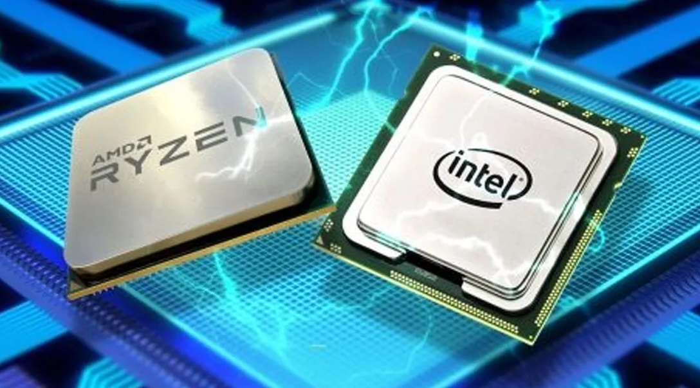
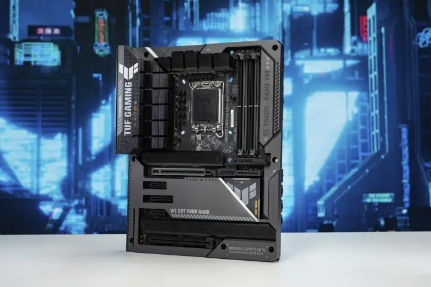
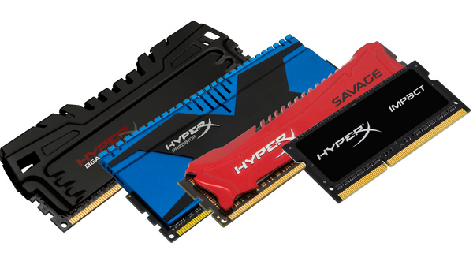
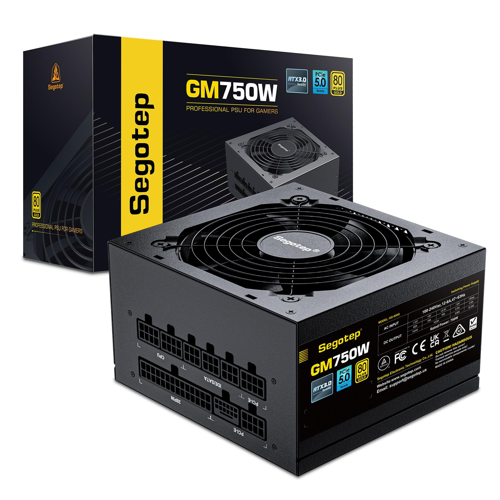
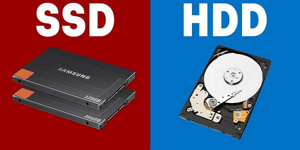
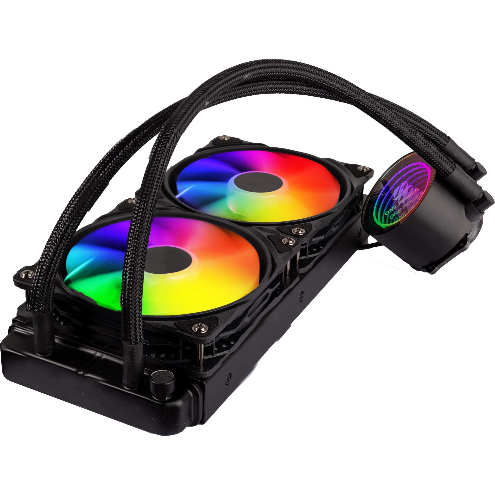
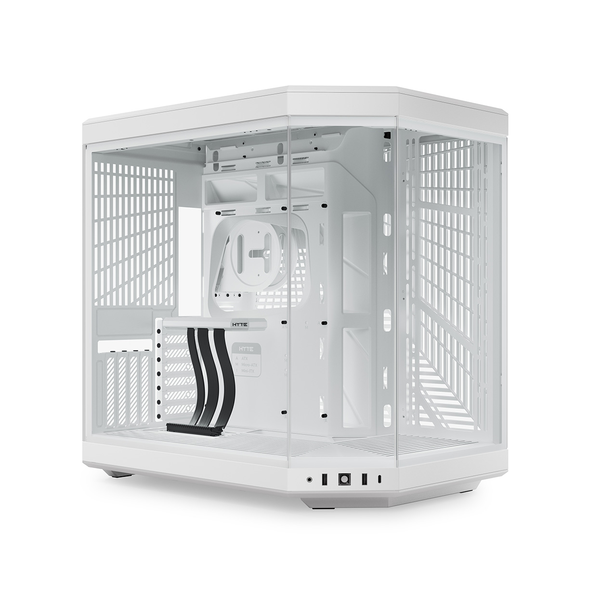

CPU
The CPU, or Central Processing Unit, is often referred to as the brain of the computer. It processes instructions and performs calculations necessary for running programs. The CPU is crucial for gaming and work-related tasks, as it ensures applications and games run smoothly.
The most common brands are AMD and Intel. Both offer a range of processors suitable for different needs and budgets.
GPU

The GPU, or Graphics Processing Unit, is often referred to as the heart of the computer's visual performance. It handles rendering images, videos, and animations, making it essential for gaming and graphic-intensive work. A powerful GPU ensures that applications and games run smoothly, delivering high-quality visuals and seamless performance.
The most common brands are NVIDIA and AMD. Both offer a variety of graphics cards designed to meet different needs and budgets.
Motherboard
The motherboard is often considered the backbone of the computer, as it connects all components and allows them to communicate. It’s critical to ensure compatibility with your chosen CPU, RAM, GPU, and storage options to create a stable and efficient system. A good motherboard provides features like high-speed data transfer, expansion slots, and USB support, enhancing the overall functionality of your build.
The most common brands are ASUS, MSI, Gigabyte, and ASRock, each offering a range of models to suit various performance needs and budgets.
RAM
RAM, or Random Access Memory, is crucial for multitasking and ensuring your system runs smoothly. It temporarily stores data for active applications, helping them respond quickly and reducing load times. For gaming and general use, at least 16GB is recommended, while 32GB or more is ideal for tasks like video editing, 3D rendering, and other resource-intensive activities.
The most popular brands are Corsair, G.Skill, Kingston, and Crucial, each offering a range of RAM options to fit different needs and budgets.
PSU
The PSU, or Power Supply Unit, delivers power to all computer components, ensuring stable and efficient operation. Choosing a PSU with adequate wattage for your system’s needs is essential, especially if you plan on future upgrades or have a high-power GPU and CPU.
The most popular brands are Corsair, EVGA, Seasonic, and Cooler Master, offering reliable options for various builds and budgets.
Storage (SSD/HDD)
Storage options include SSDs and HDDs, both crucial for storing files and applications. SSDs (Solid State Drives) offer faster load times, making them ideal for operating systems and frequently used programs. HDDs (Hard Disk Drives) provide more storage at a lower cost, making them a good choice for storing large files.
Popular brands include Samsung, Western Digital, Seagate, and Crucial, each offering a range of options for different storage needs and budgets.
Cooling System
The cooling system keeps your PC’s components at safe temperatures, preventing overheating. There are two main types: air cooling, which uses fans, and water cooling, which circulates coolant through tubes. Both options help maintain performance, with water cooling offering better efficiency in high-performance systems.
Top cooling brands include Noctua, NZXT, Corsair, and Cooler Master, with options for both air and water cooling setups.
PC Case
The PC Case houses all components and plays a significant role in airflow and cooling. It’s essential to select a case with enough room for your parts and good ventilation to keep temperatures low. Cases also come in various designs and sizes, allowing you to match your build's aesthetic and functional needs.
Popular brands include NZXT, Fractal Design, Corsair, and Cooler Master, offering styles for different preferences and budgets.